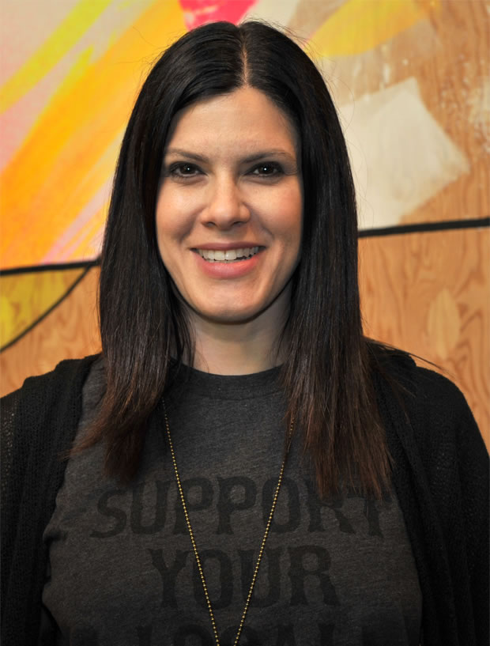
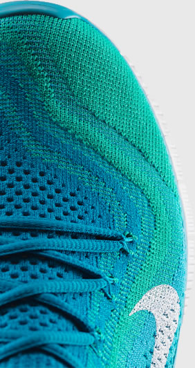
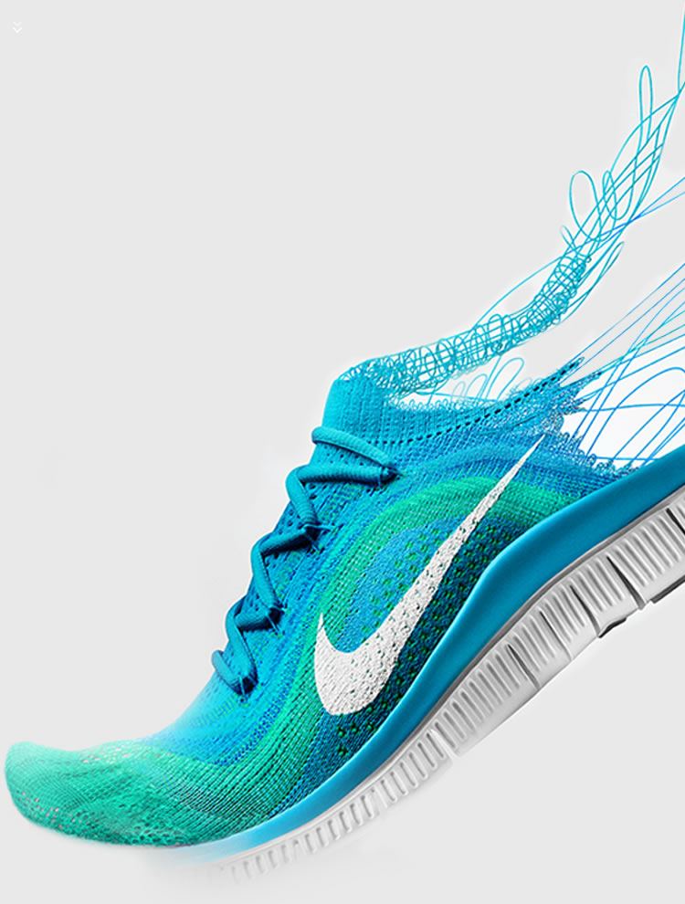
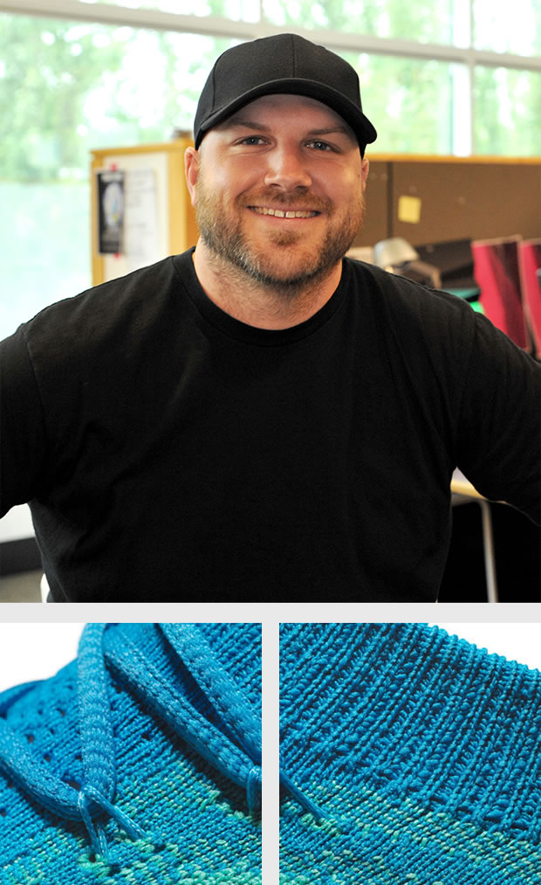
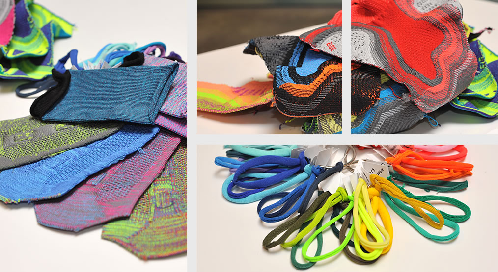
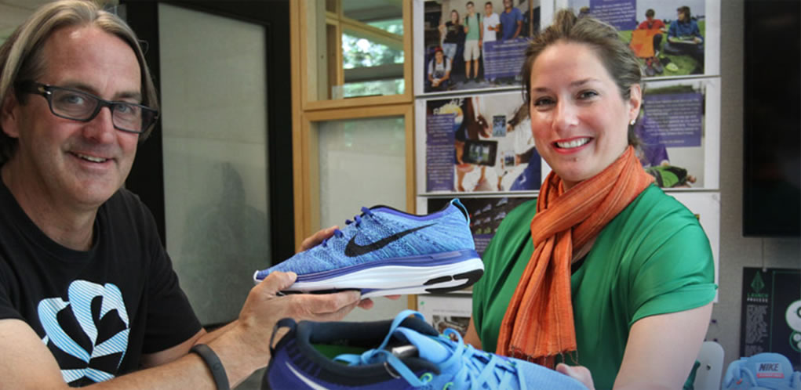
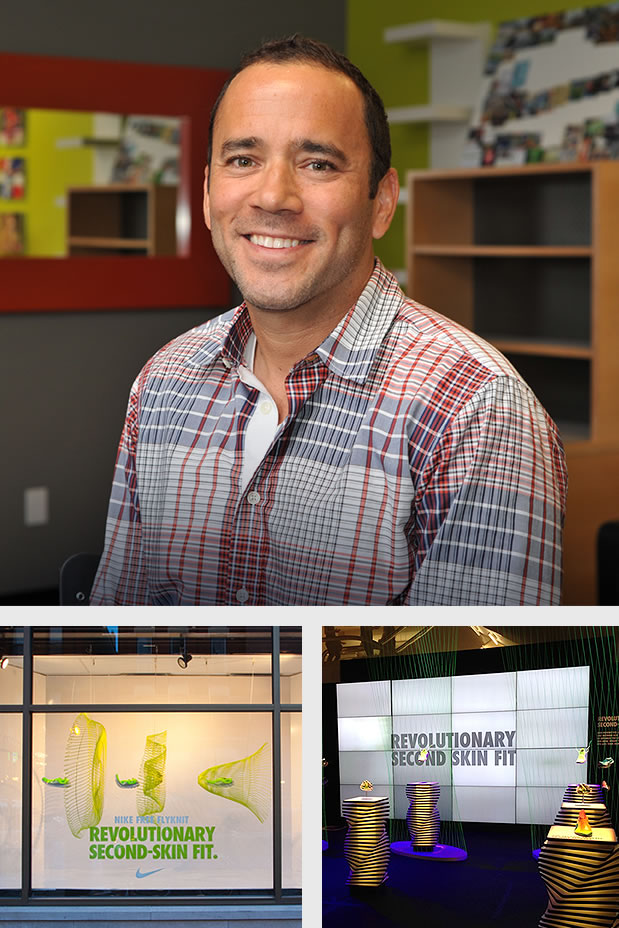
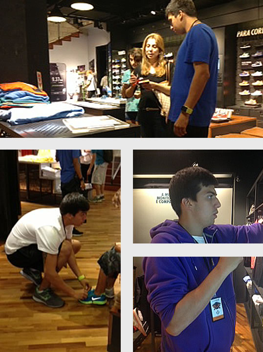

Journey


In 2004, Nike launched the first Nike Free footwear to provide athletes with the benefits of barefoot running in a protective, cushioned silhouette. Last summer marked the introduction of Nike Flyknit, an innovative and sustainable upper construction that offers a snug, second-skin fit. It was only a matter of time before the two iconic shoe technologies united.
The Nike Free Flyknit provides the benefits of natural motion with a fit like a compression sock. With evolving iterations, architectural structures and yarn types, manufacturing hurdles and endless wear testing, the Nike Free Flyknit is forged from decades of biomechanical research and design exploration with the intent of delivering the best run possible.
The shoe’s striking aesthetic is the result of a performance benefit. Zoned-performance mapping allows designers to micro-engineer specific areas of the upper for support exactly where the runner needs it, without losing the inherent flexibility of the Nike Free outsole. In the end it was a successful balance of strength and support, the ultimate natural motion evolution.
Take a look at some of the journey the Nike Free Flyknit took, as the shoe progressed from inception to the running shoe wall at retail.

Twenty years ago, Ingrid Kristiansen won the Boston Marathon wearing a minimalist bumble-bee-esque Nike Sock Racer. Ever since then, Nike designers have tried to recreate this fit as technologies evolved and progressed.
Fast forward to a year and a half ago. Senior Designer for Running Footwear Rob Williams was putting together a product strategy to support the convergence of Nike Free and Nike Flyknit. Although at first blush this may seem a simple mash-up, “getting to the final product was a different story,” Williams says. Creating a shoe that holds the foot on the tooling was a cyclical process of prototyping, trouble-shooting, learning, and adjusting for the next round. Fortunately, Williams’ partners Roberto Zavala (Senior Knitwear Specialist) and Alvaro Henz (Running Engineer II) were also up to the task.
To start, the team concentrated on the Flyknit upper itself. “We built more than 100 versions of the upper construction that we vetted through the Knit Center, IHM, designers, developers, assembling factories and the leadership team,” Henz recounted. From there, the team built numerous testing prototypes to get the full system perfected.
“This was a new process for everyone, so this core team was really setting the groundwork for how to successfully bring a game-changing technology with a complex new manufacturing process from the Kitchen to Inline,” Williams stated, adding: “The key to crafting this advanced performance product was effective relationship building.”

Exploring and evolving — that is the succinct summary of Andrea Pastega Vloon’s tireless work on using color to visually explain the strategically zoned performance mapping of a Flyknit upper.
“Flyknit is such an exciting technology. It brings a new aesthetic to performance footwear, directly connecting how it looks to how it feels on the foot,” Pastega Vloon says.
Exploration was crucial, as it was more difficult to illustrate two-dimensionally the reality of knit technology. There were several rounds to match the yarns to performance standards and experiment with different dyeing techniques to get to an informative swatch sample. Due to the knit technique, the overall creation process takes more time. “Flyknit is more crafted, more tactile. And as we learned more each season, more options presented themselves.”
The project was of course a huge team effort. The final artwork and spread of color was handed off to the Product Line Manager and Developer, along with the key business leaders and the Innovation Kitchen. “Nike Free Flyknit has been one of the most crafted products I have worked on in my 15 years at Nike. And perhaps one that I am proud of due to the cross-company collaboration,” Pastega Vloon says.

Before engaging with the product teams to infuse design with sustainable innovation at conception, Caroline Kahn takes a page from Phil Knight’s book and listens to the voice of the athlete. “We sat with dozens upon dozens of Y20 runners from around the world, let them play with some of our most innovative and sustainable products,“ Kahn says, adding, “We found they expect Nike to lead in defining what innovation is while simultaneously capturing their imagination with what is possible – sustainable or otherwise.”
Kahn comes from a strong apparel background, where the process of making the product is often more efficient as there are fewer components to a finished garment. “Traditional apparel materials making techniques like knitting are inherently efficient. They allow a designer to engineer dimension into a single material – open and closed textures, high and low
tension areas, even shape and color,” explains Kahn. These technologies provide a great place to explore for sustainable performance innovation.
For the Free Flyknit, the Sustainable Product team’s role was to help the Footwear team assess just how good the innovation is, as it relates to the environmental impact. “With Flyknit, there is an 80 percent reduction in waste versus our traditional shoes...and that’s pretty incredible,” Kahn says. As creative designers forge ahead to the next iterations of Free, Flyknit and footwear technologies unknown, Kahn and team will continue to collaborate and help identify opportunities to minimize impact while maximizing performance even further.


For the global brand team, the process of determining key seasonal stories starts a few months out at the Seasonal Innovation Launch. “Sometimes we have to debate what's going to get elevated. For Fall 2013, there was no doubt that Nike Free Flyknit was going to be the lynchpin of our Super Natural Performance story,” Roth says.
Roth and the broader brand team are responsible for developing the marketing strategies and drivers that help create and deliver the breakthrough communications and experiences Nike is known for – season in and season out. They partner closely with the product and innovation teams, and collaborate across the marketing functions, geos and territories to bring our most innovative footwear, apparel and services to life for the consumer.
“With the Free Flyknit, we wanted to really focus on what makes the product such a game-changer — the revolutionary second skin fit provided by the new compressive Flyknit upper — combined with the ultimate flexibility of Nike Free,” Roth says. The shoe's mantra, Fit to Fly, provided an emotional call-to-action around what the product delivers — a super natural ride that enhances the running experience.
To best inspire and inform runners around the globe about the Free Flyknit, Nike has launched a comprehensive campaign which kicked off with a Global Media Summit earlier this summer and has continued through an integrated mix of digital/social media, retail takeovers, brand communications, grassroots efforts and e-commerce. Already, the results have been very positive with widespread media coverage, consumer buzz and strong pre-order activity.

Thiago Josy was born into a running family, but he did not join his relatives in the sport until recently. “Before I started my job at the Nike Ipanema store, I was just a of fan of my family. Today I am a runner who recently completed the Rio half marathon,” Josy says. This first-hand experience, passion and familial history helps Josy stay connected to his consumer while managing the Running floor.
Although Flyknit is such a new and technical innovation, Josy feels it immediately resonated with the Brasilian runner. “There is nothing like it in the market, from a performance aspect as well as aesthetic,” Josy says. His local runners log their average 32km a week primarily on the beaches of Ipanema and Leblon, or in the local gyms. He’s noticed they gravitate toward lightweight, colorful footwear, where both Nike Free and Nike Flyknit are grounded.
“Our runners expect us to be well informed on the new updates and styles, in order to best match our product solutions to their personal needs,” explained Josy. Being a runner only adds to Josy’s subject matter expertise and personal passion for Nike running footwear. His own personal favorites? Nike Free 5.0 for running and Nike Free Powerlines for kicking around town.
click
to go